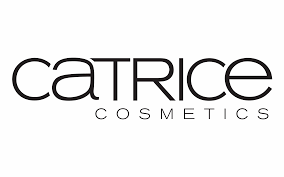
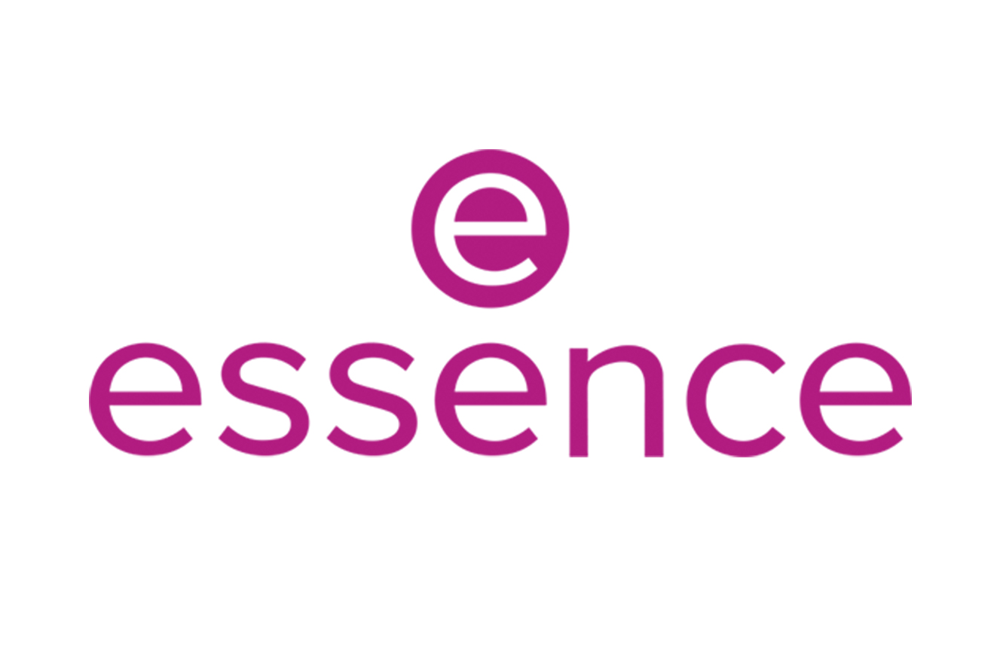
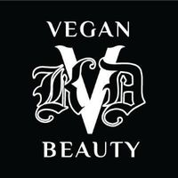
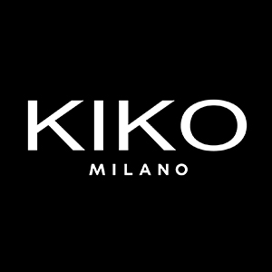
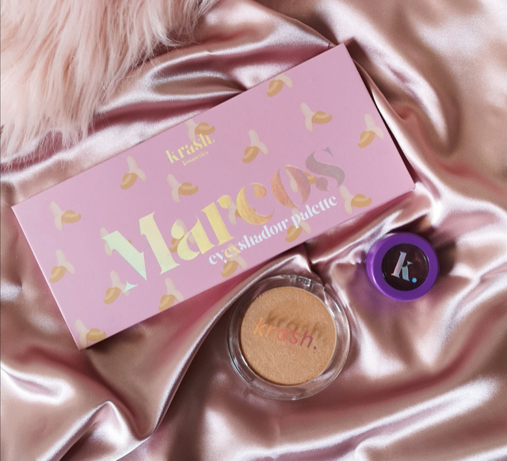
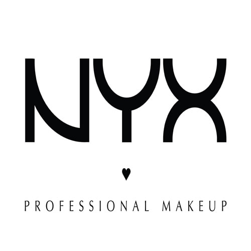

Cruelty Free
Sobre la marca
Hacemos la belleza de forma diferente en Lime Crime. Como una marca de maquillaje y tinte de estado de culto, estamos aquí para dar rienda suelta a lo que te hace único. Fundado por visionario de maquillaje Doe Deere en 2008, nuestra misión es crear productos y experiencias que te transportan a un mundo mágico donde puedes expresarte sin pedir disculpas, experimentar con todos los colores del arco iris y escapar de parecerte a todos los demás.
Somos conocidos por crear tendencias coloridas e innovaciones que han tomado la industria por asalto, de famoso Velvetines, uno de los primeros pintalabios líquidos mates, a nuestras paletas de sombra de ojos superventas Venus, lo que iniciaron el furor grunge, al destello de Diamond Crushers a nuestro Tinte Unicorn premiado.
Certificada como una marca vegana y libre de crueldad tanto por PETA como por Leaping Bunny, nuestro maquillaje y todos de sus ingredientes de origen global nunca se prueban en animales. Después de todo, somos el maquillaje para los unicornios.
La línea de productos de Lime Crime más colorida y divertida. Lime Crime es una llamativa marca de maquillaje y cabello con la que podrás divertirte y sacar ese lado creativo para diseñar tus propios estilos. La marca fue fundada en 2008 por Doe Deere, modelo e influencer, quien quiso reflejar en su propia marca su personalidad y carácter para poder encontrar la mejor versión de sí misma. Por ello, el lema de la marca se muestra como “maquillaje para unicornios” para representar la diversión, la magia y la belleza individual.
La marca cuenta con una gran variedad de productos que incluye todo tipo de intensos colores y texturas revolucionarias para que puedas expresarte como quieras. Lime Crime se está certificada por Leaping Bunny y PETA, lo que significa que garantiza que todos los productos son veganos y libres de crueldad animal.
Sus best-sellers
Entre sus best-sellers se encuentran los labiales desde los Unicorn Lipstick que se caracterizan por sus atrevidos tonos, hasta los Velvetines, que tienen una textura supermate, son líquidos y de larga duración. Además, las paletas de sombra VENUS I y II de Lime Crime desprenden pasión por sus tonos especiales.
Descubre los diferentes productos de Lime Crime que Lookfantastic te ofrece, como el Lime Crime Matte Velvetines Lipstick,el Lime Crime Diamond Crushers Lip Topper, o el Lime Crime Soft Matte Softwear Blush.
 |
 |
 |
 |
|  |
 |
 |
 |